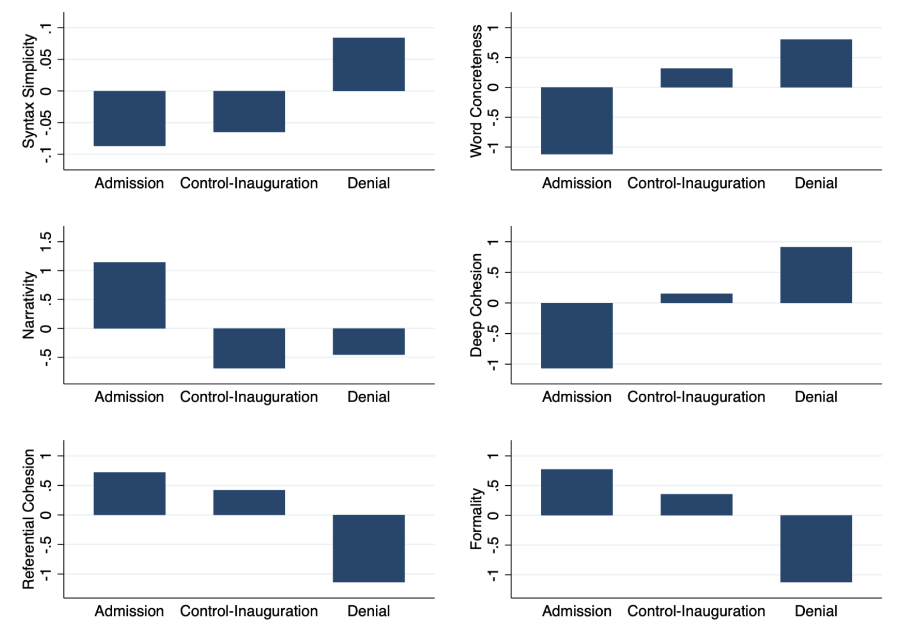
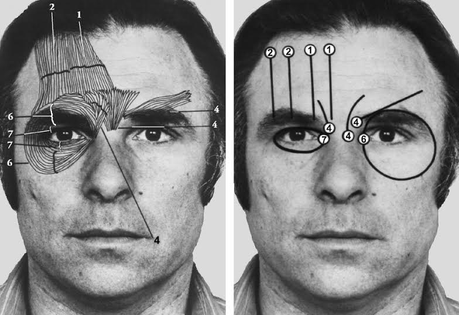
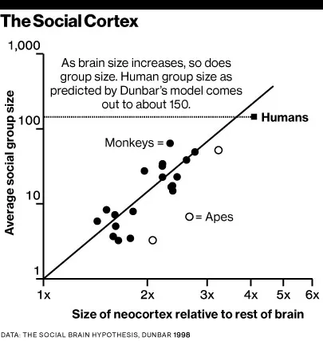
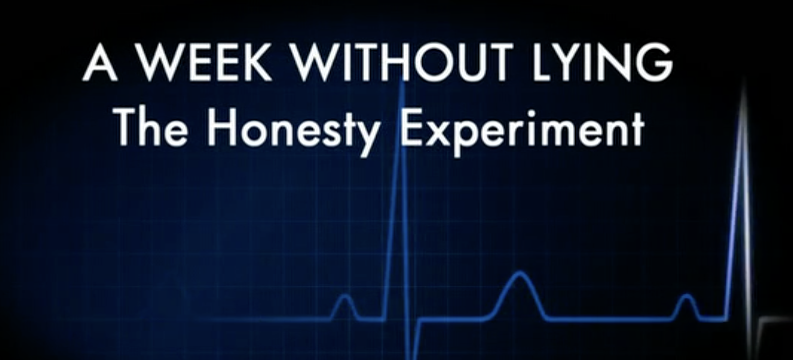
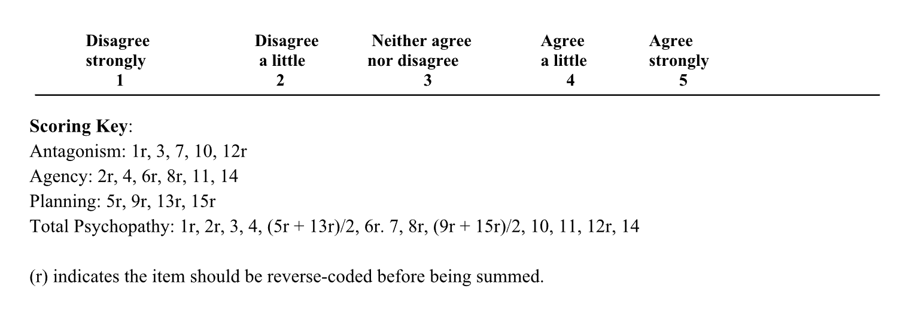
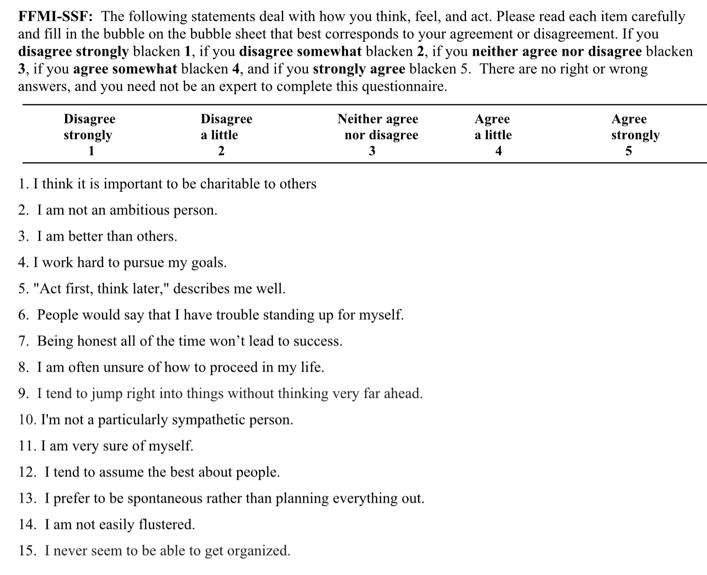

Bill & Monica:
Sex, Lies & Videotape
Identity, Agency & Environment
November 20, 2024
Dr. Gordon Wright
Lecturer in Deception, Mind-reading and People-Watching
Teaching:
- Undergraduate Research Methods and Statistics
- Coding and Data Science (R, Python, MatLab)
- Psychology & Law (3rd Year Elective)
- MSc Forensic Psychology
- Qualitative and Quantitative Research Supervision
Chief Mischief Officer: LittleMonkeyLab
My Perspective
My area of interest is ‘Social Cognition’ or how we think about the social world around us, perceive ourselves and those around us as social agents, and deploy interpersonal behaviours within our environment.
I subscribe to the 4E Cognitive Science model, specifically that we are not separate brains in separate jars, but rather
Embodied
- Cognition is rooted in the body’s interactions with the world.
Embedded
- Cognition is deeply influenced by the environment in which it occurs.
Enacted
- Cognition emerges through action and dynamic interaction with the environment.
Extended
- Cognitive processes can extend beyond the brain and body to include tools and technologies.
But we will return to that shortly…
As a deception researcher, I spend a great deal of time thinking about ‘Truth’
“Data is the new oil”
A Post-Truth Era?
- Emotion versus Evidence
- Truth wrestles with feelings and beliefs.
- Social media algorithms amplified biases and emotional content.
- Fragmentation of Reality
- Echo chambers and “alternative facts” polarise perceptions of truth.
Truthiness: When It Feels True
- Gut Over Fact
- Coined by Stephen Colbert, “truthiness” refers to beliefs that “feel” true without factual basis.
- Charisma and narrative outweigh evidence.
- Superficial Authenticity
- ‘Truth’ becomes a matter of personal resonance, not universal agreement.
Where Are We REALLY Now?
- Hybrid Reality
- The battle between evidence-based truths and emotionally driven narratives continues.
- Trust in institutions, expertise and ‘the old rules’ is fragile.
- The Path Forward
- Promoting media/data literacy and critical thinking.
- Balancing facts with empathy to rebuild shared realities.
Let’s travel back in time… to 1998
The Information Explosion: The 24-Hour News Cycle
- Rise of Mass Media
- Late 20th century: Television, cable news, and eventually the internet democratized information.
- Facts became widely accessible, but so did misinformation.
- Information Overload
- Audiences struggled to process and evaluate the growing flood of data.
- Trust in institutions began to erode under competing narratives.
The term “Reality Distortion Field” (RDF) is a phrase to describe Steve Jobs’ ability to convince himself and others to believe in almost anything, even in the face of impossible odds or evidence to the contrary.
The Reality Distortion Field refers to Jobs’ combination of charisma, passion, persuasion, and vision that made him an irresistible force, but somewhat distasteful to the modern eye despite his achievements.
The Biggest lie ever told
The Incident:
In January 1998, Bill Clinton, then-President of the United States, famously made the ‘Clinton Denial’
The statement was in response to allegations of an extramarital affair with Monica Lewinsky, a 22 year-old White House intern.
Became widely known as the “Lewinsky Scandal”
Key Context:
Impeachment Risk: The statement became pivotal in the investigation led by Independent Counsel Kenneth Starr, which aimed to uncover misconduct by Clinton.
Perjury Accusation: Clinton’s denial under oath led to accusations of perjury, which formed the basis for his later impeachment by the House of Representatives.
The Political Climate:
1990s Partisan Divide: The U.S. political landscape was deeply polarized, with Republicans seeking to capitalize on Clinton’s vulnerabilities.
Moral Conservatism: The 1990s were marked by a strong focus on personal morality in politics, with high public scrutiny of politicians’ private lives.
Cultural Change: The rise of 24-hour news cycles and tabloids (e.g., Drudge Report) amplified scandals and created a media frenzy.
Impact on Public Opinion:
While the scandal shocked many, Clinton’s approval ratings remained high, as the public often separated his personal behavior from his political performance.
Many viewed the investigation as excessively partisan, fueling debates about privacy and accountability in public office.
Context and Setting
- Press conference about after-school care
- Impromptu denial tacked on at end
- High stakes political environment
- Media presence and cameras
The Impact of the ‘Clinton Scandal’ on Monica Lewinsky
- Power Imbalance:
- As a young intern, she was vulnerable to the dynamics of authority and trust in the workplace.
- Public Shaming and Media Exploitation:
- Relentless media coverage turned her into a caricature, stripping her of dignity and agency.
- Misogyny amplified the scrutiny, with her bearing the brunt of societal blame.
The Impact of the ‘Clinton Scandal’ on Monica Lewinsky 2
- Societal Judgment and Stigma:
- She became a symbol of scandal, enduring widespread slut-shaming and societal alienation.
- Her name was unfairly reduced to a single event, erasing her complexity as a person.
- Psychological and Emotional Impact:
- The betrayal, humiliation, and loss of privacy caused deep emotional trauma.
- She faced depression and suicidal thoughts as a result of the public vilification.
The Impact of the ‘Clinton Scandal’ on Monica Lewinsky 3
- Professional Consequences:
- The scandal overshadowed her career prospects, leaving her with limited opportunities.
- Legacy and Redemption:
- While initially treated as a cautionary tale, Lewinsky has since reclaimed her voice, becoming an advocate for anti-bullying and reflecting on the harm of public shaming.
Monica Lewinsky’s Perspective on the Clinton Affair
- Personal Regret and Accountability
- Lewinsky has expressed regret for her involvement, recognizing her actions as influenced by youthful infatuation and emotional needs.
- Power Imbalance and Consent
- Over time, she has come to see the relationship through the lens of power dynamics, acknowledging the impact of Clinton’s authority and her vulnerability.
Monica Lewinsky’s Perspective on the Clinton Affair 2
- Public Shaming and Cyberbullying
- As one of the earliest victims of global public shaming, Lewinsky has highlighted the intense scrutiny she faced and its effects on her mental health, leading her to advocate against cyberbullying.
- Societal Hypocrisy and Double Standards
- Lewinsky critiques the double standards, noting the harsher judgment she faced compared to Clinton and how society often disproportionately blames women in cases of moral impropriety.
Monica Lewinsky’s Perspective on the Clinton Affair 3
- Reclaiming Her Narrative
- Through writing, speaking, and advocacy, Lewinsky has worked to reclaim her story, focusing on resilience and empowering others to overcome public shaming.
The Biggest Lie Ever Told
Global Scale and Media Coverage
- The lie reached millions globally, with real-time media coverage and international scrutiny.
The Biggest Lie Ever Told
Breach of Public Trust
- Clinton’s lie as a head of state under oath broke public trust, fostering widespread cynicism toward political leaders.
The Biggest Lie Ever Told
Legal Repercussions and Impeachment
- Clinton’s denial led to charges of perjury and impeachment, a rare and profound consequence.
The Biggest Lie Ever Told
Psychological and Cultural Impact
- The scandal prompted debates on public and private morality, influencing society’s view on honesty in leadership.
The Biggest Lie Ever Told
Iconic Language and Lasting Legacy
- The phrasing became iconic, making it a memorable cultural phenomenon and embedding it in public consciousness.
The impact on Deception Research
The ‘Clinton Denial’ became the Prototype of high-stakes deception.
At the time, media pored over every frame, but the science and the technology was basic
Later ‘ground-truth’ was established. The Blue Gap Cocktail Dress and an admission.
The Clinton Denial became the ‘Touchstone’ for deception detection and case study.
Illustrative Interpretation:
Clinton’s denial can be “read” as a crafted narrative intended to manage his political survival, balancing legal precision with an attempt to appear sincere.
The audience’s interpretation depends on the interplay between the words, the delivery, and the cultural expectations of honesty.
Deception overview
- Deception is complex and multifaceted
- Traditional focus on language alone is insufficient
- But no single ‘Pinocchio’s Nose’ exists
- Need for multimodal analysis approach and embracing of contextual complexity
The Clinton Lie: Multimodal Signals
1. Linguistic Dynamics
- Shift from policy language to defensive language
- Use of definitive phrases (“I did not have…”)
- Distancing language (“that woman”)
- Pronoun emphasis (“I never told anybody…”)
Thank you very much.
First, let me thank all of you who are here.
Many of us have been working together now for 20 years on a lot of these issues, and this is a very happy day for us.
I thank the First Lady for all she has done on this issue for as long as I have known her.
I thank the Vice President and Mrs. Gore for their family conference and the light it has shed on the announcement we’re here to emphasize today.
Thank you, Secretary Riley, for the community learning centers, and I’m very proud of what we’ve done there.
Thank you, Bill White.
I’ll talk more about your contribution in a moment, but it is truly remarkable.
I thank Rand and Debra Bass for giving us a living, breathing example of the best of America: parents who are working hard to do their jobs but also determined to do their most important job very well with their children.
I thank Senator Feinstein, Senator Dodd, and Senator Boxer for being here.
Tomorrow, in the State of the Union Address, I will spell out what we seek to do on behalf of our children to prepare them for the 21st century.
But I want to talk a little bit about education today and about this announcement in that context.
Education must be our Nation’s highest priority.
Last year, in the State of the Union Address, I set out a 10-point plan to move us forward and urged the American people to make sure that politics stops at the schoolhouse door.
Well, we’ve made a lot of progress on that 10-point plan: a remarkable array of initiatives to open the doors of college to every American who’s willing to work for it; strong progress toward high national standards in the basics, the America Reads challenge to teach every 8-year-old to read; continued progress in the Vice President’s program to hook up all of our classrooms and libraries to the Internet by the year 2000.
This has been the most important year in a generation for education reform.
Tomorrow I’ll set out the next steps on our continuing road.
First, I will propose the first-ever national effort to reduce class size in the early grades.
Hillary and I worked very hard 15 years ago now to have very strict class sizes at home in the early grades, and it was quite controversial and, I think, enormously beneficial when we did it.
Our balanced budget will help to hire 100,000 teachers who must pass State competency tests but who will be able to reduce class size in the first, second, and third grades to an average of 18 nationwide.
Second, since there are more students and there will be more teachers, there must be more classrooms.
So I will propose a school construction tax cut to help communities modernize and build new schools.
Third, I will promote a national effort to help schools that follow the lead of the Chicago system in ending social promotion but helping students with summer school and other programs to give them the tools they need to get ahead.
All these steps will help our children get the future they deserve.
And that’s why what we’re announcing here is so important as well.
Every child needs someplace to go after school.
With after-school programs, we can not only keep our kids healthy and happy and safe, we can help to teach them to say no to drugs, alcohol, and crime, yes to reading, sports, and computers.
My balanced budget plan includes a national initiative to spark private sector and local community efforts to provide after-school care, as the Secretary of Education said, to half a million more children.
Now, let me say, in addition to all the positive benefits, I think it’s important to point out that the hours between 3 and 7 at night are the most vulnerable hours for young people to get in trouble, for juvenile crime.
There is this sort of assumption that everybody that gets in trouble when they’re young has just already been abandoned.
That’s not true.
Most of the kids that get in trouble get in trouble after school closes and before their parents get home from work.
So in the adolescent years, in the later years, it is profoundly important to try to give kids something to say yes to and something positive to do.
But we can’t do it alone.
As I said, our plan involves a public-private partnership.
So it has fallen to me to announce that our distinguished guest from the Mott Foundation of Flint, Michigan, has pledged up to $55 million to help ensure that after-school programs supported by Federal funds are of the highest quality.
That is an astonishing gift.
Thank you, Bill White.
Thank you.
We are determined to help Americans succeed in the workplace, to raise well-educated, healthy kids, and to help Americans succeed at the toughest job of all, that of being a parent.
And the Mott Foundation has gone a long way toward helping us.
I thank them.
Now, I have to go back to work on my State of the Union speech.
And I worked on it until pretty late last night.
But I want to say one thing to the American people.
I want you to listen to me.
I’m going to say this again.
I did not have sexual relations with that woman, Miss Lewinsky.
I never told anybody to lie, not a single time—never.
These allegations are false.
And I need to go back to work for the American people.
Thank you.
Coh-Metrix
Facial Action Coding System
The Facial Action Coding System (FACS) is a system to taxonimize human facial movements based upon their underlying musculature.
It was first developed by Carl-Herman Hjortsö in 1978 and then popularised and expanded upon by Paul Ekman and Wallace V. Friesen in 2002.

2. Embodied Nonverbal Cues
- Aggressive finger pointing (uncharacteristic gesture)
- Fixed gaze and eye-widening during denial
- Postural changes from policy speech to denial
- Breaking from his usual gestural patterns

3. Acoustic Changes
- Fundamental frequency shifts
- Changes in speech rhythm
- Doubled rate of pitch peaks during denial
- Distinct from baseline speaking pattern
Little Monkey
Dunbar’s Number
I did some people-watching on the telly
Cognitive Load in Deception
- Traditional view: Lying is more cognitively demanding
- Requires suppressing truth
- Need to create consistent story
- However, lying can sometimes be easier when:
- Stakes/rewards are high
- Lies are well-rehearsed
- Story is simple
Being an Effective Liar
- Key strategies:
- Reducing cognitive load through preparation
- Embedding lies within truthful information
- Self-deception to reduce cognitive demands
- Influencing factors:
- Personality traits (e.g., Machiavellianism)
- Moral cognition
- Cultural context
Bill Clinton as the Prototype of the Psychological Machiavellian
- Masterful Charm and Charisma
- Clinton’s charm helped him connect deeply with others, using it as a tool for influence—a core Machiavellian trait.
- Strategic Adaptability
- He showed flexibility in adapting to scandals and challenges, focusing on maintaining control and favorable outcomes.
- Calculated Risk-Taking
- Clinton took high-stakes risks, characteristic of Machiavellians, who weigh costs and benefits to achieve personal success.
- Political Manipulation and Persuasion
- Known for “Clintonian triangulation,” he skillfully built alliances, navigated power dynamics, and appealed to both sides.
- Instrumental Rationality
- His pragmatic approach prioritized effective outcomes over ethical consistency, focusing on what was politically advantageous.
- Effective Management of Public Image
- Clinton maintained a favorable public image despite controversies, displaying expert self-presentation skills.
- Boundary Between Public and Private Morality
- Demonstrating psychological compartmentalization, he separated personal actions from his public role, a typical Machiavellian characteristic.
Theoretical Frameworks
1. Increased Cognitive Demand
- Lying is mentally taxing
- People try to minimize distractions
- Can manifest in multiple channels
2. Expectancy Violations
- Mismatches between expected and actual behavior
- Can create listener disequilibrium
- May appear across different modalities
3. Approach/Avoidance
- Distance strategies in deception
- Can be linguistic or physical
- Mixed signals possible
Note: These frameworks help us understand how deception manifests across different channels.
Language Analysis
Syntax Patterns
- More syntactically simple phrases
- More concrete words
- Lower narrativity
- Unexpected high deep cohesion
Word Usage
- Increased cognitive process words
- Fewer six-letter words
- Fewer words per sentence
- Strategic pronoun usage
Note: The paper found clear linguistic patterns during the deceptive statement.
Acoustic Analysis
Key Findings
- Fundamental frequency (f0) changes
- Normal speech: 4-6 peaks per minute
- During denial: Doubled rate of peaks
- Clear deviation from baseline pattern
Note: Acoustic analysis showed marked changes during the deceptive segment.
Gestural Analysis
Notable Changes
- Limited gestures during policy speech
- Aggressive finger pointing during denial
- Uncharacteristic gesture choice
- Departure from usual closed-fist style
Note: The contrast in gesture use was particularly striking.
Facial Expression Analysis
Blink Patterns
- Fixed gaze during deception
- Extended eye-widening phase
- Blink rate changes before/after
- Consistent with cognitive load theory
Note: Facial analysis revealed classic deception patterns.
Convergent Evidence
Multiple signals aligned: - Language simplified - Acoustic patterns changed - Gestures became aggressive - Facial control increased
Supporting “Increased Cognitive Demand” theory
Note: These sources provide excellent background on different aspects of deception analysis.
Machiavellian Mastery:
Clinton’s Strategic Deception Through an Enactivist Lens


Machiavellian Traits
- Strategic manipulation of appearances
- Skilled management of power dynamics
- Control over social narratives
- Calculated use of context
- Mastery of asymmetrical relationships
Strategic Context Management
Clinton’s Machiavellianism in Action:
- Chose policy speech context deliberately
- Leveraged presidential authority
- Created formal, credible setting
- Minimized interactive questioning
- Controlled Physical Environment
- Podium as barrier/power symbol
- Camera angles controlled
- Limited audience interaction
Note: The choice of context wasn’t random - it was strategically optimal for deception
Asymmetrical Affordance Fields
For Clinton:
- Full awareness of reality
- Access to damage control options
- Legal defense preparation
- Policy pivot possibilities
For Public:
- Limited to trusting authority
- Restricted questioning opportunities
- Focus directed to policy matters
- Emotional response management
Note: This asymmetry is characteristic of both Machiavellian and deceptive behavior
Power Dynamics in Action
Machiavellian Techniques:
- Gesture Control
- Aggressive finger pointing
- Dominant posture
- Space control
- Vocal Authority
- Emphatic denials
- Tone modulation
- Strategic pausing
Note: These are not just deception tells but power moves
Disrupting Mutual Meaning-Making
Machiavellian Mastery:
- Unilateral meaning imposition
- Authority-based truth claims
- Emotional manipulation
- Strategic context exploitation
Evidence:
- Fixed gaze patterns
- Rigid posture
- Controlled interaction
- Limited reciprocity
Note: Classic Machiavellian approach to controlling narrative
Multimodal Integration
Coordinated Control Across:
- Physical Domain
- Gesture
- Posture
- Facial expression
- Social Domain
- Status cues
- Authority signals
- Power dynamics
- Linguistic Domain
- Word choice
- Tone
- Rhythm
Note: Machiavellian skill requires mastery across all domains
Strategic Success Factors
- Context Exploitation
- Policy speech setting
- Presidential authority
- Media presence
- Affordance Management
- Asymmetrical fields
- Controlled access
- Limited interaction
- Power Dynamics
- Institutional leverage
- Physical dominance
- Narrative control
Note: Success required coordination of multiple strategic elements
Implications for Detection
- Look for Power Patterns
- Dominance behaviors
- Control tactics
- Interaction limits
- Watch for Asymmetries
- Information access
- Interaction opportunities
- Meaning-making chances
- Analyze Context
- Strategic setting choice
- Environment control
- Timing decisions
Note: Understanding Machiavellian patterns helps detect deception
Machiavellianism in Action:
Clinton Through the FFMI Lens
The FFMI Dimensions
Antagonism - Represents traits associated with hostility, selfishness, and disregard for others. It includes behaviors like manipulation, callousness, immodesty, and cynicism. Antagonistic individuals prioritize their own needs and goals, often at the expense of others, and may lack empathy or compassion.
Agency - Refers to traits related to ambition, self-confidence, and assertiveness. High agency reflects a strong sense of competence, goal-directed behavior, and the ability to influence and lead. People with high agency are self-assured, persistent, and less prone to self-doubt.
Planfulness - Involves strategic thinking, organization, and deliberation. Planful individuals are methodical, prefer structure, and think through decisions before acting. Low planfulness, on the other hand, reflects impulsivity, spontaneity, and a lack of foresight or organization.
Agency in Clinton’s Performance
Observable Markers:
- Self-Promotional Elements
- “I need to go back to work for the American people”
- Emphasis on presidential duties
- Policy-focused framing
- Control Mechanisms
- Controlled speaking environment
- Managed media access
- Structured response format
- Achievement Focus
- Policy accomplishments highlighted
- Leadership role emphasized
- Status reinforcement
Strategic Planning Evidence
Calculated Elements:
- Context Selection
- Policy speech backdrop
- Controlled environment
- Limited Q&A opportunity
- Message Construction
- Categorical denial
- Moral indignation
- Policy pivot available
- Risk Management
- Legal language choice
- Witness implications minimized
- Future defense prepared
Antagonism Markers
Display Elements:
- Assertive Behaviors
- Finger pointing
- Direct eye contact
- Strong vocal tone
- Status Signaling
- Presidential setting
- Authority symbols
- Formal presentation
- Social Influence
- Emotional appeals
- Credibility cues
- Trust leveraging